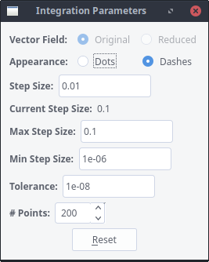
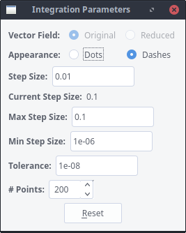
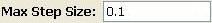

Polynomial Planar Phase Portraits
THE PARAMETER OF INTEGRATION WINDOW

In this window you may modify the parameters that affect to the integration
of separatrices and orbits through the Runge-Kutta 7/8 method and
its graphical representation. They only should be modified if you are not
satisfied with the results you have got, and they must be tested in order
to chose the best set of values for the particular Polynomial Differential
System under study.
Polynomial Planar Phase Portraits
THE PARAMETER OF INTEGRATION WINDOW

In this window you may modify the parameters that affect to the integration
of separatrices and orbits through the Runge-Kutta 7/8 method and
its graphical representation. They only should be modified if you are not
satisfied with the results you have got, and they must be tested in order
to chose the best set of values for the particular Polynomial Differential
System under study.
-
The Option Set is
an option which only has meaning if there is a line of singularites, i.e. if the two components of the
Polynomial Differential System have a non-trivial common factor, or if the line at infinity of the Poincare
Disc is filled with singular points. Then, you may choose between calculating the separatrices and orbits of the
Polynomial Differential System either in the original system, or in the reduced one, that is, in
the system with finitely many singularities.
-
The Option Set will toggle between whether you get the separatrices
and orbits drawn as a sequence of dots or a set of dashes which link all these dots. Normally you will not see
the difference between them unless you make a zoom. Note that you can must make this choice before you
integrate the separatrices, you cannot change the type of appearance of an orbit or separatrix that is already
calculated.
-
The input gives
the starting step size that we are using when we start to integrate orbits
with the Runge-Kutta 7/8 method. There is no reason for modifying
it because the Runge-Kutta 7/8 method improves the size of the step
continuously to better follow the orbit.
-
The field gives the current step that Runge-Kutta 7/8 method is
using, so P4 will use this step in the case you ask to continue integrating a separatrix or an orbit
further more.
-
The input  gives the maximum step size that we will allow when we integrate
orbits with the Runge-Kutta 7/8 method. Even if some orbits would accept a largest value without
increasing the error, then the orbit that you would see would be a piecewise linear curve, so we suggest to
leave this value unmodified as it is fast enough. On the contrary, this value may be too fast for certain
systems, even producing erroneous crossings of separatrices and/or orbits. In those cases you are advised to
reduce this number and evaluate the plotting.
-
The input gives the minimum step size that we will allow when we
integrate orbits with the Runge-Kutta 7/8 method. Same as before, this value does not need be modified
unless you experience strange behaviours of separatrices close to points where it is highly sensitive to small
changes. Anyway, this kind of separatrices will always be conflictive ones.
-
The input gives the value which will make Runge-Kutta 7/8 method
decide
whether it must duplicate the integration step, or divide it by 2. If the difference of the values given by the
two integrating functions embedded in the Runge-Kutta 7/8 method is greater than this value, it means
that we must use a smaller step. If this difference is lower than a cent of this value, then we may run a little
more.
-
The integer input
 gives the number of points
that we will produce each time that we ask to integrate a separatrix or an orbit. This value can be increased
without limit but we suggest that it should only be done to study special slow separatrices or orbits.
gives the number of points
that we will produce each time that we ask to integrate a separatrix or an orbit. This value can be increased
without limit but we suggest that it should only be done to study special slow separatrices or orbits.
 Back to the main page
Back to the main page
 Back to the windows page
Back to the windows page